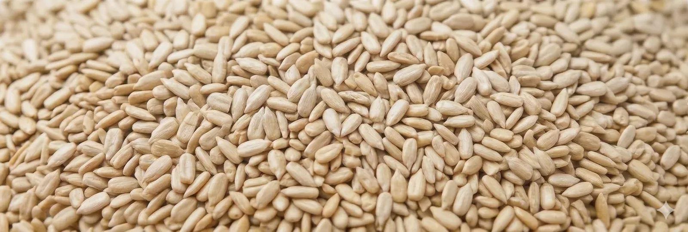

Kurzfassung — Das Wichtigste
- Die Wahl der Qualitätsstufe ist eine Beschaffungsentscheidung — keine kosmetische. Die falsche Stufe wirkt sich direkt auf Ausbeute, Kosten und Produktoptik aus.
- Bäckerei-Qualität (650–700 Stück/oz): Brotauflagen, Granola, Müsli — funktionale Anwendungen, bei denen Farbeinheitlichkeit nicht gefordert ist.
- Premium-Bäckerei-Qualität (550–600 Stück/oz): Handwerksbrotauflagen, Premium-Granola, Proteinriegel — größerer Kern, optisch sortiert.
- Konditorei-Qualität (500–550 Stück/oz): Überzogene Snacks, Retail-Packungen, Trail-Mixes — ausschließlich reinweiß bis hellcreme.
- Chips: Ölpressung, Riegeleinlagen, Tierfutter — Bruchkornfraktion, 42–48 % Ölgehalt.
Vier Qualitätsstufen. Auf dem Foto kaum zu unterscheiden. Ein Preisunterschied von 15 bis 30 % zwischen der günstigsten und der hochwertigsten Stufe. Und Konsequenzen, die weit über die Rechnung hinausgehen. Ein Konfekthersteller, der zur Kostensenkung Bäckerei-Qualität bestellt, stellt mitten im Produktionslauf fest: Die natürliche Farbvariation der Kerne — für eine Broteinlage völlig akzeptabel — löst an der optischen Sortieranlage vor der Schokoladenüberzugslinie automatische Ausschussmeldungen aus. Eine Bäckerei, die für ein dichtes Mehrkornbrot Konditorei-Qualität spezifiziert, zahlt einen erheblichen Aufpreis für optische Sortierung und Farbgleichmäßigkeit, die im Brotinneren vollständig verschwindet. Beide Folgen sind kein Lieferantenfehler. Beide sind Spezifikationsfehler.

Wie Sonnenblumenkerne klassifiziert werden
Die Klassifizierung beginnt im Feld und wird auf der Verarbeitungslinie abgeschlossen. Nach der Ernte werden die Sonnenblumenköpfe gereinigt, getrocknet und geschält. Die geschälten Kerne durchlaufen Kalibriersiebe, die nach Größe trennen — angegeben in Stück pro Unze (Stück/oz): Ein niedrigerer Wert bedeutet einen größeren Kern im Durchschnitt. Ein Kernzählwert von 500 Stück/oz ergibt sichtbar größere Stücke als einer von 700 Stück/oz.
Nach der Kalibrierung durchlaufen die Kerne einen Schwerkraftsortierer — um geschrumpfte oder unvollständig gefüllte Stücke auszuscheiden — und bei höheren Qualitätsstufen eine optische Sortierung: Mehrpass-Farbkameras mit Druckluftausblasern, die verfärbte, abweichende oder fehlerhafte Kerne entfernen. Dieser optische Sortierschritt ist es, der Konditorei-Qualität am deutlichsten von Bäckerei-Qualität unterscheidet — und der den größten Teil des Preisunterschieds erklärt.
Die Merkmale, die die Qualitätseinstufung bestimmen, sind: Größenkalibrierung (Stück/oz-Bereich), Bruchkornanteil, Farbtoleranz, Reinheit (% Kern nach Gewicht), Ölgehalt und Feuchtigkeitsgehalt. Jedes dieser Merkmale hat eine direkte Bedeutung für den nachgelagerten Prozess — nicht nur für die Qualitätssicherung.
Bäckerei-Qualität — Die funktionale Spezifikation
Spezifikation: 650–700 Stück/oz | 99,98 % Reinheit | 45–50 % Ölgehalt | max. 8 % Feuchte | max. 8 % Bruchkörner
Mit 650–700 Stück/oz sind Bäckerei-Qualitätskerne mittelgroß — gleichmäßig genug für eine homogene Verteilung in einer Teigmasse oder auf einer Brotkruste, ohne die enge optische Sortierung höherer Stufen. Das Farbprofil lässt natürliche Variation bis hin zu Bernsteintönen und leichter Fleckigkeit zu, die nach dem Backen nicht mehr sichtbar ist.
Geeignet für: Krustenbelegung bei Roggen-, Mehrkorn- und Sauerteigbroten; Einlage in Cracker- und Fladenbrotteig; Müsli- und Granolamischungen, bei denen die Kerne mit dunkler gefärbten Haferflocken und Samen kombiniert werden; Trail-Mixes, bei denen Farbeinheitlichkeit im Retail kein primäres Produktmerkmal ist; Zutatenströme in Industriebäckereien.
Nicht geeignet für: Anwendungen, bei denen der Kern optisch im Mittelpunkt steht — Schokoladenüberzug, Snack-Einzelpackung als Topping oder freiliegende Konfektoberfläche. Der zulässige Bruchkornanteil von 8 % ist ebenfalls relevant: Ist Fragmentierung im Endprodukt sichtbar, ist eine engere Spezifikation erforderlich.
Preis-Leistungs-Position: Die korrekt bepreiste Stufe für Hochvolumen-Einlagenapplikationen. Eine höhere Spezifikation für Brot oder Granola erhöht die Kosten ohne funktionalen Mehrwert.
Premium-Bäckerei-Qualität — Größerer Kern, optisch sortiert
Spezifikation: 550–600 Stück/oz | extragroßer Kern | optisch sortiert | max. 8 % Feuchte
Premium-Bäckerei-Qualität schließt die Lücke zwischen funktionaler Backzutat und sichtbarem Retail-Garnish. Der Bereich von 550–600 Stück/oz ergibt einen sichtlich größeren Kern — visuell auffällig bei einem offenporigen Brot oder einem handwerklichen Laib, bei dem die Auflage ein bewusstes Designelement ist. Der optische Sortierschritt entfernt Farbausreißer und geschrumpfte Stücke und erzeugt ein gleichmäßigeres Erscheinungsbild, ohne den strengen Farbstandard der Konditorei-Qualität zu erreichen.
Geeignet für: Handwerksbrot und Backwaren, bei denen die Kernauflage ein bewusstes Verkaufsargument ist; hochsichtbare Sandwichtoastbrote in Retailverpackungen; Premium-Granola und -Müsli für das obere Marktsegment; Protein- und Energieriegel, bei denen die Kernsichtbarkeit als Qualitätssignal dient; Food-Service-Zutatenströme mit Großkern-Spezifikation.
Nicht geeignet für: Anwendungen, die den reinweißen bis hellcremen Farbbereich der Konditorei-Qualität erfordern. Wenn Ihre Schokoladen- oder Konfektproduktion absolute Farbkonsistenz verlangt, wird diese Stufe Ausschuss produzieren. Ebenso: Ist Korngröße für Ihren Prozess irrelevant — etwa eine Mehrkornbrotrezeptur, in der der Kern eine von sieben Einlagen ist — zahlen Sie für eine Größe, die Sie nicht benötigen.
Preis-Leistungs-Position: Je nach Marktlage ca. 10–20 % über Bäckerei-Qualität. Gerechtfertigt überall dort, wo Korngröße oder optische Gleichmäßigkeit ein sichtbares Produktmerkmal ist.
Konditorei-Qualität — Die strengste Spezifikation im Sortiment
Spezifikation: 500–550 Stück/oz | 99,99 % Reinheit | max. 6 % Bruchkörner | ausschließlich reinweiß bis hellcreme
Konditorei-Qualität ist die strengste Spezifikation im Sortiment. Der Reinheitsschwellenwert steigt auf 99,99 %, die Bruchkorntoleranz sinkt auf 6 %, und — am wichtigsten — die Farbe ist auf Reinweiß und Hellcreme beschränkt. Diese Stufe wird für Anwendungen produziert, bei denen der Kern unter Retail- oder Food-Service-Bedingungen vom Endverbraucher gesehen wird — häufig als überzogenes oder dekoriertes Stück.
Geeignet für: Schokoladenüberzogene Kerne; Joghurt-überzogene Snackmischungen; Retail-Trail-Mixes und Snackpackungen, bei denen das Erscheinungsbild des Kerns ein primäres Qualitätssignal ist; Konfekteinlagen in Schokoladenformen; dekorierte Back- und Konditoreiwaren; Export an Abnehmer mit strengen kosmetischen Retail-Anforderungen; Anwendungen, bei denen Halal- oder Koscher-Zertifizierung eine Anforderung des Käufers oder Zielmarkts ist.
Nicht geeignet für: Hochvolumen-Broteinlagen oder Granola-Mischungen, bei denen der Farb- und Kosmetikaufpreis Kosten erzeugt, ohne Mehrwert zu schaffen. Konditorei-Qualität für ein Produkt zu spezifizieren, in dem der Kern für den Verbraucher nie sichtbar ist, ist ein Beschaffungsfehler, der die Zutatenkosten erhöht, ohne die Marge zurückzugeben.
Preis-Leistungs-Position: Die Premierstufe, typischerweise 20–30 % über Bäckerei-Qualität. Der Preis wird durch Mehrpass-Optiksortiertung und engere Farbselektion gerechtfertigt. Für die Anwendungen, die sie bedient, ist sie nicht überspezifiziert.
Chips (Bruchkörner) — Ein anderes Produkt, keine mindere Qualität
Spezifikation: Max. 5 % ganze Kerne | 42–48 % Ölgehalt | Bruchkornfraktion
Chips sind die bei der Kalibrierung abgetrennte Bruchkornfraktion — kein minderwertiges Produkt, sondern eine eigenständige Produktkategorie. Der Ölgehalt von 42–48 % macht sie für die Kaltpressung geeignet. Die fragmentierte Form ist funktional, nicht kosmetisch.
Geeignet für: Kaltgepresstes Sonnenblumenöl; Granola und Müsli, bei denen sich eine kleinere, unregelmäßige Kornfraktion gut integriert; Energie- und Proteinriegel, bei denen der Kern in eine Matrix eingearbeitet wird; Vogel- und Tierfutter.
Preis-Leistungs-Position: Der günstigste Preispunkt im Sortiment. Geeignet dort, wo die Form irrelevant ist und Ölgehalt oder Nährstoffbeitrag im Vordergrund stehen.
Qualitätsstufen im Überblick
| Merkmal | Bäckerei | Premium-Bäckerei | Konditorei | Chips |
|---|---|---|---|---|
| Größe (Stück/oz) | 650–700 | 550–600 | 500–550 | Bruchfraktion |
| Reinheit | 99,98 % | 99,98 %+ | 99,99 % | — |
| Max. Bruchkörner | 8 % | 8 % | 6 % | ≤5 % ganze Kerne |
| Farbe | Natürliche Variation | Optisch sortiert | Ausschließlich reinweiß–hellcreme | Nicht relevant |
| Ölgehalt | 45–50 % | 45–50 % | 45–50 % | 42–48 % |
| Max. Feuchte | 8 % | 8 % | 8 % | 8 % |
| Optische Sortierung | Standard | Standard | Mehrpass | Standard |
| Zertifizierungen | FSSC 22000, ISO 22000, Koscher, Halal | FSSC 22000, ISO 22000, Koscher, Halal | FSSC 22000, ISO 22000, Koscher, Halal | FSSC 22000, ISO 22000, Koscher, Halal |
| Typische Anwendungen | Brot, Cracker, Granola, Müsli | Handwerksbrotauflagen, Premium-Granola, Proteinriegel | Überzogene Snacks, Retail-Packungen, Konfekt | Ölpressung, Riegelmatrix, Tierfutter |
Entscheidungshilfe — Stufe und Anwendung zusammenbringen
Als Ausgangspunkt vor der Erstellung Ihrer Spezifikation:
Handwerksbrotauflagen (retailseitig sichtbar): Premium-Bäckerei-Qualität. Der größere Kern (550–600 Stück/oz) wirkt als Qualitätssignal am Regal; die optische Sortierung sichert die Gleichmäßigkeit.
Sandwich- oder Kastenbrotzutat (Kern im Inneren der Krume oder des Teigs): Bäckerei-Qualität. Größe und Farbe sind im Brotinneren irrelevant. Eine höhere Spezifikation erhöht die Kosten ohne funktionalen Gegenwert.
Granola und Müsli — Standardsortiment: Bäckerei-Qualität. In Kombination mit Haferflocken, Samen und Trockenfrüchten ist Farbvariation nicht erkennbar.
Granola und Müsli — Premium- oder Regalprodukt: Premium-Bäckerei-Qualität. Größere Korngröße und optische Gleichmäßigkeit sind in der Verpackung visuell differenzierbar.
Protein- und Energieriegel (Kern in Matrix eingebettet): Bäckerei-Qualität oder Chips. Chips dort, wo sich eine kleinere Fraktion besser in die Riegelstruktur integriert.
Schokoladen- oder joghurtüberzogene Kerne: Konditorei-Qualität. Farbkonsistenz ist für die Überzugslinie und das Endproduktbild zwingend erforderlich.
Retail-Trail-Mix oder Snackpackungen: Konditorei-Qualität. Der Kern ist für den Verbraucher direkt sichtbar und ein primäres Qualitätssignal des Produkts.
Handelsmarken-Snackpackungen für Supermarkt-Eigenmarken: Konditorei-Qualität, mit Koscher- oder Halal-Zertifizierung je nach Anforderung des Kategoriebetreuers.
Vogelfutter und Tiernahrung: Chips oder Bäckerei-Qualität. Keine kosmetische Anforderung.
Kaltgepresstes Sonnenblumenöl: Chips. Ölgehalt 42–48 %; für die Pressung ist keine ganze Kernform erforderlich.
Häufige Spezifikationsfehler
1. Konditorei-Qualität als pauschale „sichere" Wahl überspezifizieren
Beschaffungsteams, die mit der Kernklassifizierung wenig vertraut sind, weichen gelegentlich auf die höchste Spezifikation aus, um Qualitätsreklamationen zu vermeiden. Für eine Brot- oder Granola-Anwendung erhöht das die Zutatenkosten um 20–30 % ohne jeden funktionalen Nutzen. Der richtige Ansatz: die Stufe auf die tatsächlichen Sichtbarkeitsanforderungen der Anwendung abstimmen.
2. Bruchkornanteil bei Retail-Anwendungen außer Acht lassen
Ein Bruchkornanteil von 8 % ist für die Broteinlage angemessen, für eine Retail-Snackpackung jedoch problematisch, wenn der Verbraucher das Produkt direkt sieht. Der Unterschied zwischen 8 % (Bäckerei) und 6 % (Konditorei) wirkt auf dem Papier marginal; in einem transparenten Retail-Beutel ist der optische Unterschied erheblich. Prüfen Sie immer, ob Ihr Produkt retailseitig sichtbar ist — und spezifizieren Sie entsprechend.
3. Feuchtigkeitsspezifikation als Nebenparameter behandeln
Maximal 8 % Feuchte ist stufenübergreifend Standard — der Grenzwert sollte jedoch gegen die geplante Haltbarkeitsdauer, das Verpackungsformat und die Lagerbedingungen abgewogen werden. Bei Produkten mit langer Haltbarkeit oder Bestimmungsorten mit hoher Umgebungsfeuchte ist eine engere Feuchtigkeitsspezifikation (6–7 % bei Anlieferung) sinnvoll. Die Feuchtigkeitskonformität ist anhand des COA zu verifizieren — nicht vorauszusetzen.
4. Lieferantengleichheit bei einer unspezifizierten „geschälten Sonnenblumenkerne"-Bestellung annehmen
Eine Bestellung, die nur „geschälte Sonnenblumenkerne" nennt — ohne Stück/oz-Bereich, Bruchkornanteil, Farbspezifikation und Feuchtigkeitsgrenzwert — ist keine Spezifikation. Sie ist eine Einladung, das zu erhalten, was der Lieferant gerade vorrätig hat. Stufendefinitionen sind in der Branche nicht standardisiert. Zwei Lieferanten können beide „Bäckerei-Qualität" liefern — mit erheblich unterschiedlichen Bruchtoleranzen, Größenbereichen und Farbprofilen. Spezifizieren Sie vollständig, verlangen Sie für jede Lieferung einen COA, und gleichen Sie das eingehende Material mit diesem COA ab.
Warum Herkunft und Verarbeitungskontinuität die Qualitätszuverlässigkeit bestimmen
Gleichbleibende Qualität ist nicht nur das Ergebnis der Verarbeitungslinie an einem bestimmten Tag — sie ist eine Funktion der gesamten Lieferkette vom Anbau bis zum Container. Der Sonnenblumenanbau in der Region Warna, Bulgarien, profitiert von einem kontinentalen Klima mit ausreichend Wärmeeinheiten für eine vollständige Samenreife, was sich direkt auf Kernfüllgrad, Ölgehaltsstabilität und den Anteil geschrumpfter Kerne auswirkt, die andernfalls die Reinheit mindern würden.
Vertikal integrierte Betriebe — bei denen dieselbe Einheit Anbaufläche, Nachernte-Handling, Schälung, Reinigung, optische Sortierung und Verpackung kontrolliert — schließen die Qualitätsverwässerung aus, die entstehen kann, wenn ein Produkt zwischen unabhängigen Handelsstufen die Hand wechselt, jede mit ihrer eigenen Toleranzabweichung. Wird eine Spezifikation vertraglich vereinbart, ist sie über Lieferungen hinweg reproduzierbar, weil alle Prozessvariablen end-to-end kontrolliert werden.
Für EU-Käufer ist auch die Dokumentationskontinuität entscheidend: Die FSSC-22000-Zertifizierung deckt das Lebensmittelsicherheits-Managementsystem der Verarbeitungsanlage ab, während EUR.1-Warenverkehrsbescheinigungen und Pflanzengesundheitszeugnisse die Zollabwicklung und die Sorgfaltspflichten gemäß EU-Lebensmittelimportvorschriften unterstützen. Das vollständige Dokumentenpaket vor der ersten Lieferung anzufordern — COA je Partie, Pestizidrückstandsanalyse, EUR.1, Pflanzengesundheitszeugnis und religiöse Zertifizierung soweit zutreffend — ist branchenübliche Praxis und sollte von jedem seriösen Lieferanten reibungslos erfüllt werden.
Agros-98 AD liefert geschälte Sonnenblumenkerne in allen vier Qualitätsstufen aus seiner Anlage in Suworowo, Region Warna, Bulgarien, mit einer Standard-Mindestbestellmenge von einem 40-Fuß-Container. Käufern, die vor einer Volumenentscheidung die Stufenauswahl evaluieren möchten, können Musterkollektionen über Bäckerei-, Premium-Bäckerei- und Konditorei-Qualität bereitgestellt werden — für einen direkten visuellen und analytischen Vergleich mit Ihrer aktuellen Spezifikation. Um ein Angebot anzufordern, eine individuelle Spezifikation zu besprechen oder Muster zu arrangieren, kontaktieren Sie das Exportteam von Agros-98 mit Ihrem Zielverwendungsbereich, den erforderlichen Zertifizierungen und dem bevorzugten Verpackungsformat. Für Neukunden mit bestätigtem laufendem Bedarf können Erstbestellungen unterhalb der Containermenge besprochen werden.
Vertrieb & Export